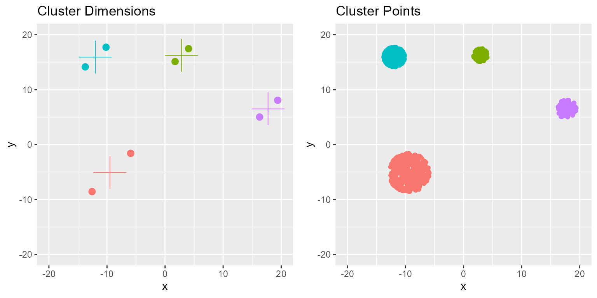
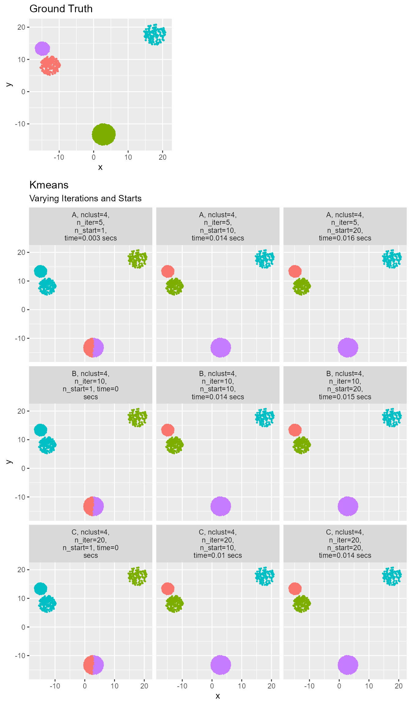

library(rClustering)
library(dplyr)
library(tidyselect)
library(tidyr)
library(stringr)
library(ggplot2)
library(gridExtra)
library(kableExtra)
clusts <- make_clusters(4, c_range = c(-20, 20), density = 500, categorical = F, seed = 1)
clusts %>%
sample_n(10) %>%
kable() %>%
kable_material(c("striped", "hover"), full_width = F)| y_true | x | y |
|---|---|---|
| 1 | -11.621969 | -3.158619 |
| 1 | -8.281378 | -6.979358 |
| 3 | -12.552332 | 16.030500 |
| 1 | -10.828491 | -3.680739 |
| 1 | -9.308444 | -2.092698 |
| 3 | -11.584022 | 14.231961 |
| 1 | -10.087508 | -8.408464 |
| 1 | -7.257910 | -3.745361 |
| 3 | -10.429119 | 16.351010 |
| 4 | 16.405530 | 6.801611 |
clust_positions <- clusts %>%
group_by(y_true) %>%
summarize_all(list(min = min, max = max, mean = mean)) %>%
select(sort(peek_vars()))
clust_plot_data <- clust_positions %>%
pivot_longer(cols = !y_true) %>%
mutate(coord = if_else(str_detect(name, "^y_"), "y", "x")) %>%
mutate(name = str_sub(name, start = 3)) %>%
pivot_wider(names_from = coord, values_from = value) %>%
mutate(center = factor(name == "mean"))
clust_plot_data %>%
head() %>%
kable() %>%
kable_material(c("striped", "hover"), full_width = F)| y_true | name | x | y | center |
|---|---|---|---|---|
| 1 | max | -5.920596 | -1.602418 | FALSE |
| 1 | mean | -9.489214 | -5.077230 | TRUE |
| 1 | min | -12.569354 | -8.564183 | FALSE |
| 2 | max | 4.049007 | 17.464265 | FALSE |
| 2 | mean | 2.848125 | 16.245504 | TRUE |
| 2 | min | 1.727480 | 15.115688 | FALSE |
shapes <- c(16, 3)
names(shapes) <- c(F, T)
sizes <- c(3, 10)
names(sizes) <- c(F, T)
p1 <- clust_plot_data %>%
ggplot(aes(x = x, y = y, col = y_true, shape = center, size = center)) +
geom_point() +
ggtitle("Cluster Dimensions") +
coord_cartesian(xlim = c(-20, 20), ylim = c(-20, 20)) +
scale_shape_manual(values = shapes) +
scale_size_manual(values = sizes) +
theme(legend.position = "none")
p2 <- clusts %>% ggplot(aes(x = x, y = y, col = y_true)) +
geom_point() +
ggtitle("Cluster Points") +
coord_cartesian(xlim = c(-20, 20), ylim = c(-20, 20)) +
theme(legend.position = "none")
grid.arrange(p1, p2, ncol = 2)
Since the clusters are perfect circles we can extract the center by taking the mean and the edges by taking the min and max of the coordinates.
# Prepare clusters
clusts <- make_clusters(4, c_range = c(-20, 20), density = 500, categorical = F, seed = 2)
# Prepare arguments
vals <- setNames(data.frame(expand.grid(c(5, 10, 20), c(1, 10, 20))), c("n_iter", "n_start"))
vals$n_clust <- 4
vals$fit_name <- rep(c("A", "B", "C"), 3)
# Loop over argument combinations and fit Kmeans
out <- mapply(get_mean_clusters,
fit_name = vals$fit_name,
n_clust = vals$n_clust,
iter = vals$n_iter,
n_start = vals$n_start,
MoreArgs = list(data = clusts, seed = 1),
SIMPLIFY = F
) %>%
bind_rows() %>%
mutate(y_pred = factor(y_pred))
p1 <- ggplot(out, aes(x = x, y = y, col = y_true)) +
geom_point(size = 0.5) +
ggtitle("Ground Truth") +
theme(legend.position = "none")
p2 <- ggplot(out, aes(x = x, y = y, col = y_pred)) +
geom_point(size = 0.5) +
facet_wrap(~title, labeller = labeller(title = label_wrap_gen(20)), ncol = 3) +
ggtitle("Kmeans", subtitle = "Varying Iterations and Starts") +
theme(legend.position = "none")
grid.arrange(p1, p2,
widths = c(3, 4), heights = c(3, 9),
layout_matrix = rbind(
c(1, NA),
c(3, 3)
)
)
Note how important it is to use multiple starts so the model can converge. No amount of iterations will help if the starting point is very poor. Additionally, Kmeans is an unsupervised learning method. This means that it can find distinct clusters, but the clusters are not guaranteed to have the same label as the ground truth. The more iterations and starts specified the longer the fit takes.